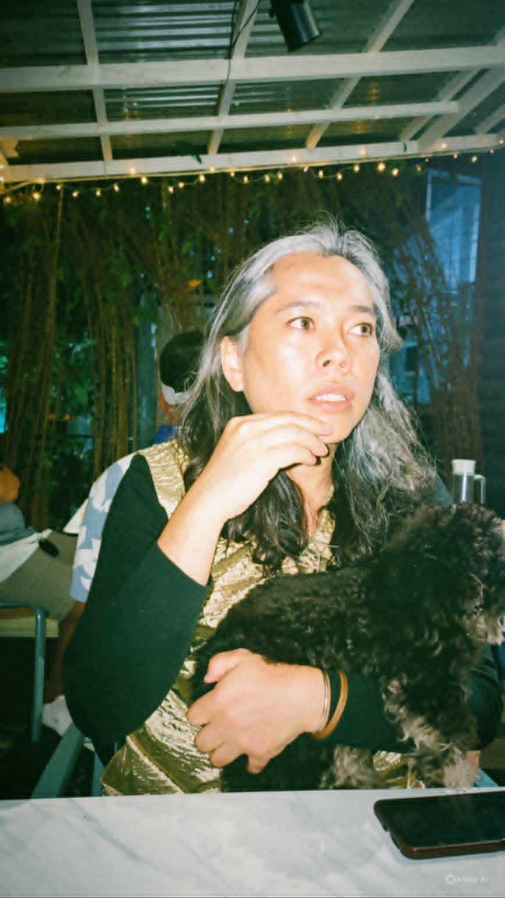

Moira Lang
Moira Lang grew out of equal parts commercial instinct, queer spunk and ache, class friction, and a long, intimate education in Philippine cinema.
She has co-written films that made many cry over a nation of mothers separated from their children (Anak), see themselves and their conflicted families (Tanging Yaman), flirt with hunger and longing (Kailangan Kita), and turn OFW heartbreak into aching romance (Milan).
As a producer she kept pushing: Ang Pagdadalaga ni Maximo Oliveros, Zombadings 1: Patayin sa Shokot si Remington!, Norte, Hangganan ng Kasaysayan, Patay na si Hesus, and Manila's Finest.
Her filmography moves between the mainstream and the margins without settling comfortably in either.